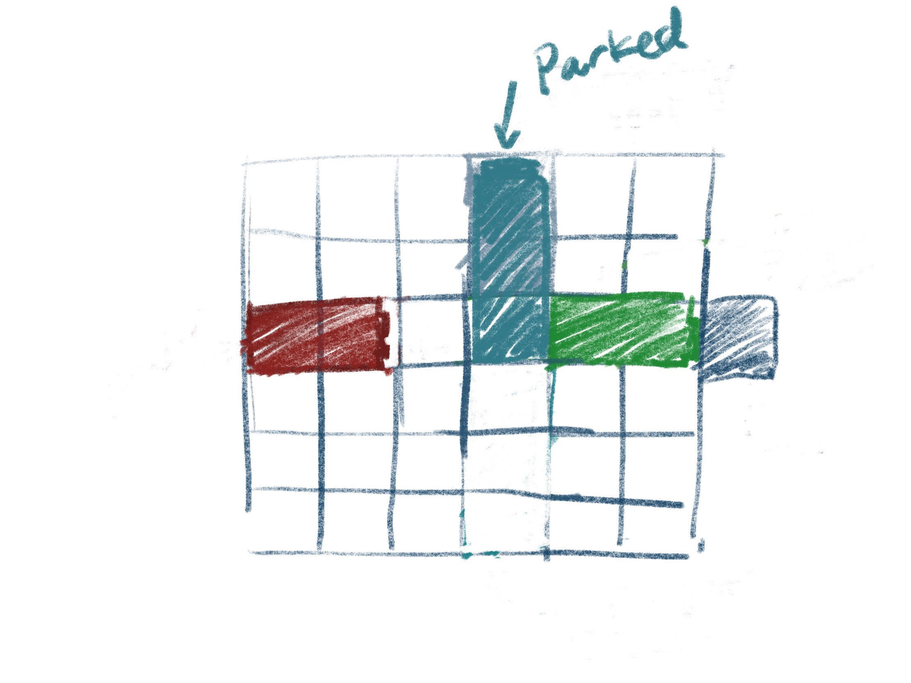

Rush Hour but with parking spaces that you can't move off of.
The game is played on a 6x6 board viewed from above. The game has only plain tiles, parking spaces (which are 2 squares long), and the exit tile. The game is played by moving cars in the board until there's a clear path from the red car to the exit tile. The score is the number of levels completed.
Start: The player (the red car) is placed at a random space on the board in such a way that the car is oriented horzontally and the back of the car is against the back left side of the board. Then end tile is placed directly opposite to the player on the front right side of the board. 1-3 parking spaces are placed randomly. Parking spaces must have one square on at least one edge of the board. Random cars (either normal 2 tile ones or 3 tile long trucks) are then generated in radom spaces on the board and either horizontal or vertical orientation on the board until it is no longer possible to generate more without blocking all possible solutions.
Parking:Besides the player's car, once a car has been moved onto a parking space, it cannot be moved again.
Controls: Pressing the 'space' key changes the current selected car. The arrow keys move the cars. Car's can only move along their current orientation forwards or backwards. A car only needs to cover all 2 squares of the parking space to be considered "parked". Because parking spaces may result in no longer solvable boards, pressing 'r' resets the board.
Finish: Once the row of tiles between the player and the exit tile are empty of other cars, the player can exit the traffic jam.
Drawing: The board is drawn in isometric view. Every thing is a solid colored lambert. All non-player car colors are randomly generated shades of blue, green, and purple.